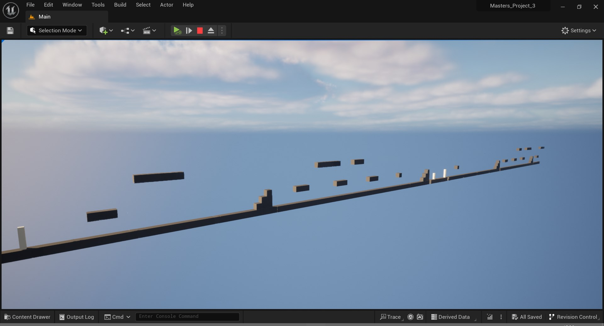
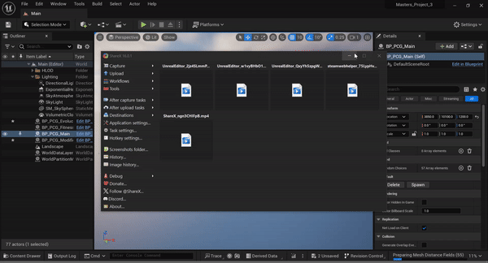
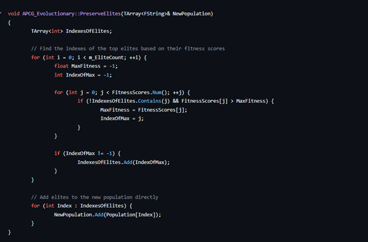
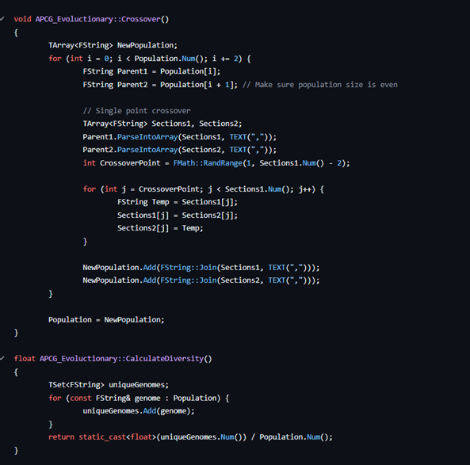

Masters Project 3
Procedural content generation (PCG) in games refers to the creation of game content automatically using algorithms. PCG has been used to generate many different aspects in games. PCG techniques have been used to generate terrains like in Minecraft, to generating story for games like Dwarf Fortress. An example of how PCG can help developer is shown in Elite Dangerous which uses PCG to generate a 1-1 scale replication of the Milky way galaxy which would have been impossible to design my hand. A fitness function sometimes called a test function is a function that grades a PCG output against a set of parameters. The main advantage of a fitness function is that it gives a PCG approach a way of evaluating itself and can give the developer useful information on the output of their PCG system so that it can be tweaked and improved. An evolutionary approach to procedural generation is a system that can evolve itself improving the output of the approach without the need of a developer tweaking the values in the code, to allow a approach to know what it wants to generate the approach will require some sort of fitness function to evaluate the outputs generated which it then can use the values from a fitness function to improve upon the algorithm.
For my third project I wanted to improve the output of the Procedural level generation that I have created, Within this project i both improved the PCG system from project 1 and create an early implementation of a evolutionary algorithm.
- Evoluctionary Attempt at procedurally generating 2D platforming levels
- Initialize Population – creates the initial level sequence that the approach will evolve.
- Evaluate Population – gives the level sequence a fitness score based on uniqueness.
- Selection – selects good sub segments of the sequence to save for later generations.
- Crossover – Allows for crossover from previous generation.
- Adjust Mutation Rate - adjusts the chance of randomness of the generations, randomness will decrease over time.
- Mutation – Allows for randomness to be introduced within the sequence.
- Spawn Grid From Genome – creates the level from the sequence create by the Procedural approach.
- This process repeats currently for 100 generations

Code snipit of the preserve function which will save elements of the level that the algorithm thinks are useful so that they can be used again in future genertions
This snipit is of the crossover and Calculate Diversity functions
The crossover function will implement seactions from previous generations into the generation
Calculate Diversity function insures that the generation doesnt get repetative with its generation i.e. not allowing the same seaction spawn twice in a row
GitHub link -